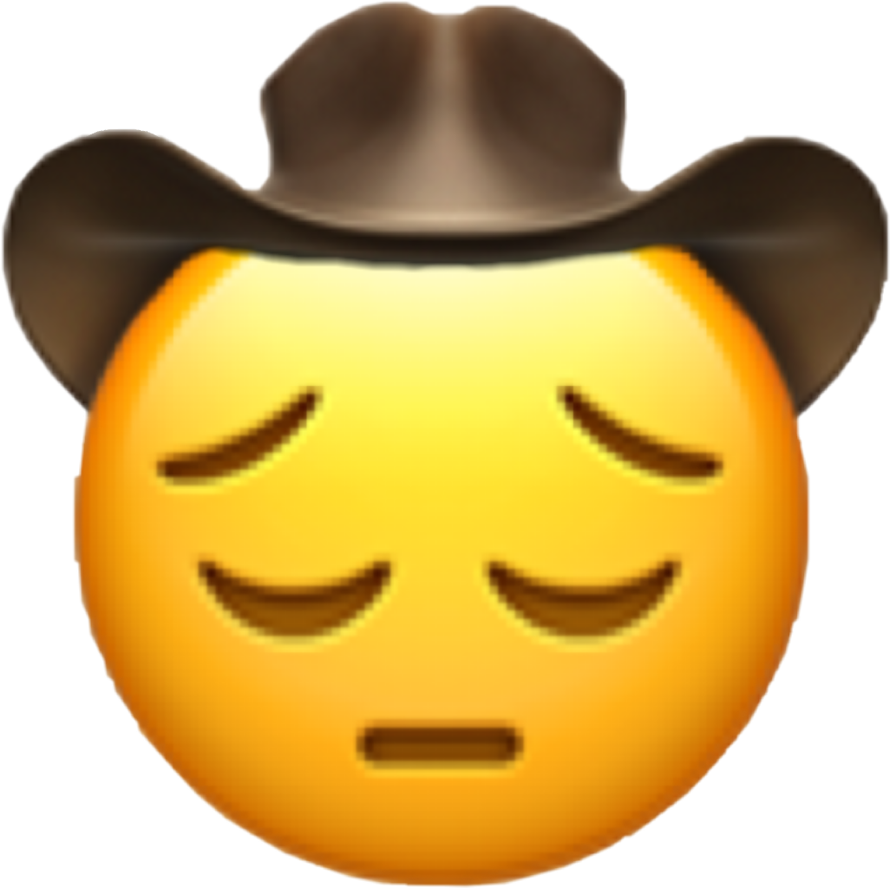
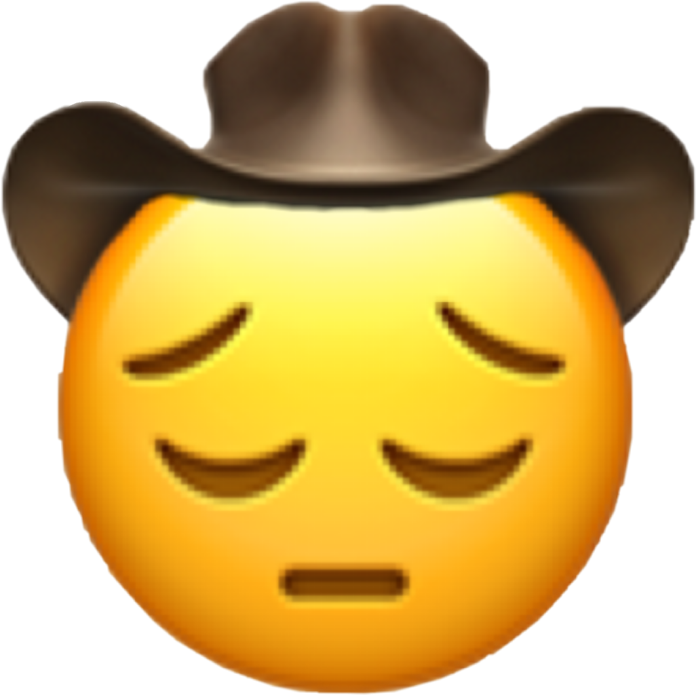

 The cowboys on this page are very sad as you can see. It would mean a lot to them if you watched the video embedded on this page. Who knows, maybe it can brighten your day as well.
Thank you for your help.
Pardner.
 ATTENTION
ATTENTION The cowboys on this page are very sad as you can see. It would mean a lot to them if you watched the video embedded on this page. Who knows, maybe it can brighten your day as well.
Thank you for your help.
Pardner.